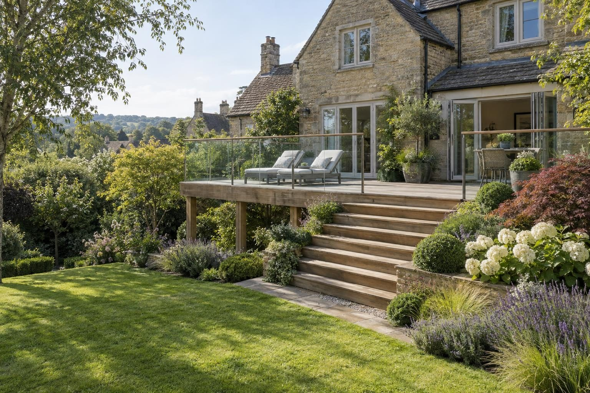
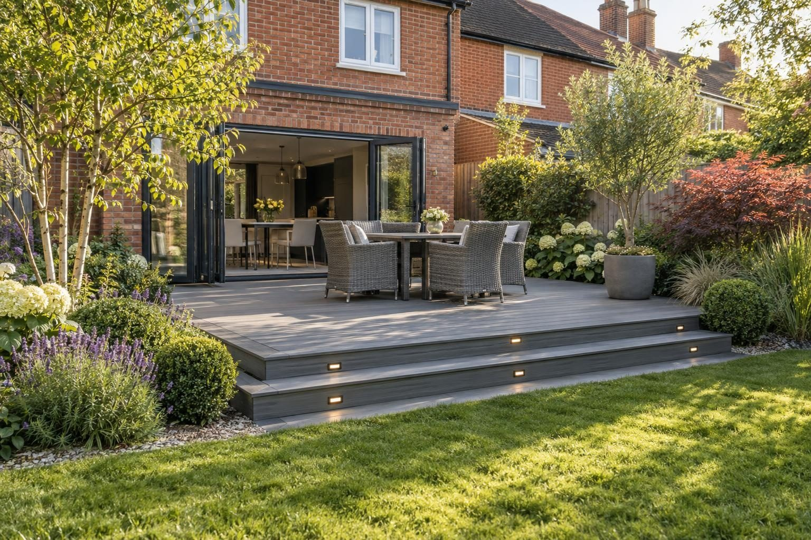

Composite & timber decking in Cottesmore
Low-maintenance composite and timber decks for Cottesmore family homes, built after a test dig on the village's mixed ground.
Composite decking in Cottesmore typically costs £200–£250 per m² supplied and fitted, and softwood timber £110–£140 per m², so a 15–20m² composite deck usually comes to £3,000–£5,000. Ground is the local variable: the village sits on mixed ground on the edge of the limestone, and drainage changes from plot to plot, so we dig a test hole before deciding how the supports and drainage will work.
- Composite, fitted
- £200–£250 per m²
- Planning
- Not needed under 30cm high
- Ground
- Mixed limestone and clay
- Guarantee
- 5 years, in writing
Our 2026 guide prices. Your fixed price comes in writing after the site visit. Full breakdown: composite & timber decking cost guide.
Composite & timber decking in Cottesmore
Family homes in Cottesmore often want a garden that takes less looking after, and that is where composite decking earns its higher starting price. The boards do not rot, splinter or need staining, so the deck stays usable for children and pets without an annual weekend of sanding and treating. For owners who prefer the look of real wood, or a smaller budget, pressure-treated softwood remains a sound choice. Either way, the frame underneath is what decides how long the deck lasts.
The village mixes ironstone and limestone cottages in its old centre with a good deal of later housing, and Kendrew Barracks, the former RAF Cottesmore, sits just outside it. We build decks for all of these on a braced frame, with posts or pads on firm ground, a treated or aluminium sub-frame at the right joist spacing, and a membrane and drainage underneath. For families on the later estates, a deck by the back door often becomes the main place to eat outside from spring to autumn, so we size it around a table and chairs rather than guessing.
What makes Cottesmore different
Cottesmore sits on mixed ground at the edge of the limestone, and the North Brook rises nearby. One garden may drain freely while the next holds water after rain, so we never assume. A test hole on the visit tells us how deep firm ground is for the supports and whether water will soak away under the deck or needs a planned route off it. The conservation area covering the historic village has no Article 4 direction.
A typical Cottesmore deck sits off the back of a later family house, sized for a table and somewhere for children to play, in composite boards with hidden fixings and a picture-frame edge. It involves a test dig, setting supports to suit the ground, building the frame, and laying membrane and drainage before the boards go on.
Sources: Rutland conservation areas · Rutland flood risk strategy.
Permissions in Cottesmore
- PlanningDecking in a rear garden is normally permitted development if no part of it is more than 30cm above the ground and, with other outbuildings and platforms, it covers no more than half the garden. A raised deck over 30cm needs planning permission, and a listed house needs consent. Listed buildings and the Cottesmore conservation area have tighter rules, so we check your address before anything is designed. Planning Portal: decking
- TreesTrees in a conservation area need six weeks' notice before work, and protected trees need consent; both are free. Rutland County Council: tree works
- Design and priceWe measure up, check the ground and the planning position, and give you one fixed written price.
Rules checked October 2026.
What you get in Cottesmore
- Test hole dug on each plot because Cottesmore ground varies
- Composite boards that will not splinter under bare feet
- Hidden fixings for a smooth, family-friendly surface
- Composite boards that will not rot, splinter or need staining, or pressure-treated softwood
- Frame built to the board maker's joist spacing, so boards do not bounce or bow
- Picture-frame edges, hidden fixings and LED step lights where you want them
The specification
- Ground levelled, weed membrane and drainage gravel laid
- Posts or pads on firm ground, set in concrete
- Treated softwood or aluminium sub-frame, braced and level
- Boards fixed to the manufacturer's spacing and fixings
- Edges, fascias, steps and lighting finished
- Five year workmanship guarantee in writing

Rated 5.0 from 37 Google reviews
“Had them round to do some decking at my grandparents house. Work was finished inc2 days as agreed, price was competitive and quality was good. Thanks again”
Lewis · Decking — Google review
“Lewis and his colleagues were very professional, friendly, hardworking and good value. They worked hard to get the job done efficiently, offered advice and were very knowledgeable. They even worked during the rain to complete our fence, decking and lawn. …”
Will · Fence, decking and lawn — Google review
Everything else we do here


Composite & timber decking in Cottesmore: questions
What does decking cost in Cottesmore?
Is planning permission needed for a deck in Cottesmore?
Is composite worth the extra cost for a family garden?
Why do you need a test hole for a deck?
Composite & timber decking nearby
Request a site visit in Cottesmore
We measure up, check levels and drainage, and send a written proposal with the build-up, the programme and one whole price. No pressure and no follow-up sales calls.